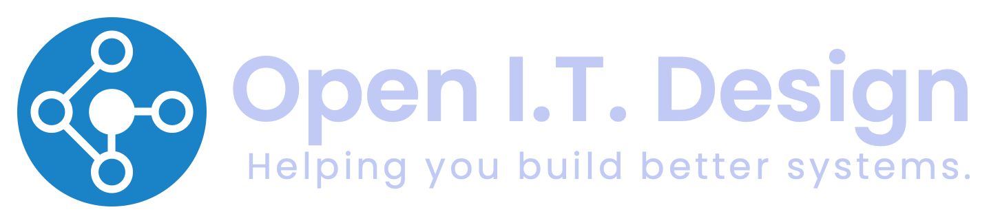

Cloud & Infrastructure
Design, implementation, and integrations across AWS, Google Workspace, and Azure: infrastructure that's built to scale, not just to work today.

IT architecture and infrastructure consulting for small and mid-sized businesses ready to scale: cloud, compliance, email deliverability, and cost optimization. I'm Brian Huddleston, IT Architect. In business since 2007.
I'm Brian Huddleston, IT Architect and founder of Open IT Design. I've been helping organizations build better IT systems since 2007.
Based in the San Francisco Bay Area and working remote-first with clients whose infrastructure lives in the cloud, I specialize in companies that grew organically and now need real structure: frameworks, infrastructure, and integrations that hold up as they scale.
My experience spans every major operating system (with a strong preference for Linux and macOS), plus deep work in AWS, telephony, VoIP, security systems, and data centers. For office build-outs, I design and architect the IT infrastructure, then help with implementation by coordinating and managing the project: contractors, network wiring, HVAC, electrical, Wi-Fi, security systems, and door access.
I work closely with facilities, security, engineering, and finance teams, because IT decisions touch every part of the business.
Not a break/fix shop. I build the frameworks, infrastructure, and integrations that let a growing company hold together, plus the cost discipline that keeps it lean.
Design, implementation, and integrations across AWS, Google Workspace, and Azure: infrastructure that's built to scale, not just to work today.
DMARC tied into DKIM and SPF, plus cleanup of misconfigured records, so your mail actually lands in the inbox instead of spam.
SOC 2 prep through compliance frameworks like Vanta and Drata, reviewing and connecting your systems so the audit is a formality, not a fire drill.
Integrating HR systems with identity providers and linking them to every other system. One identity, one source of truth.
Full visibility into your real IT and shadow-IT footprint, then finding where services are underutilized or duplicated, and turning sprawl into savings.
I design and architect the IT infrastructure for new or growing offices, then help implement it by coordinating and managing the project: contractors, network wiring, HVAC, electrical, server rooms, Wi-Fi, security systems, and door access.
Vendor and model selection across the major providers, plus automation and agentic workflow buildouts. Practical adoption, not hype.
A representative sample of the platforms I work with, not exhaustive. AI providers are featured, not buried, because agentic workflows are increasingly part of the work.
My sweet spot is small and mid-sized businesses that grew organically and now need real IT structure to scale: compliance readiness, cost control, and infrastructure that doesn't break under growth.
The range is wide: from solo founders all the way up to 20,000-employee utilities. What they share is a need for someone who can see the whole picture. I work closely with facilities, security, engineering, and finance teams, so the systems I build fit the way the business actually runs.
We start with a free, no-obligation call (or an in-person meeting) to understand your needs and what you're trying to build.
I evaluate your tech stack and confirm I'm the right fit for the work. If I'm not, I'll tell you before you spend a dollar.
You get a projected timeline, cost, and availability. Billing is hourly in 15-minute increments, so you only pay for what you use.
Book a free intro call and I'll help you figure out the next step, whether that's a full engagement or just a quick reality check on your IT.